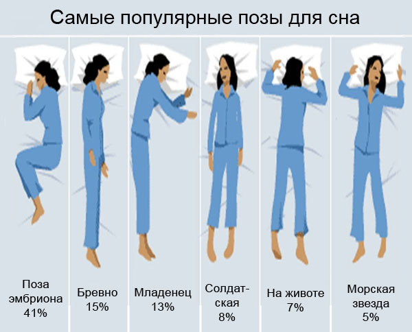

СОН
ЛУЧШЕЕ ВРЕМЯ ДЛЯ СНА
Чтобы определить, сколько часов нужно для здорового сна, следует знать, что сон – это циклический процесс. Каждый из циклов занимает примерно полтора часа. По мнению ученых, если проснуться ровно по истечении цикла, то пробуждение будет наиболее легким. Таким образом, продолжительность сна должна укладываться в промежутки, кратные полутора часам (т.е. 1,5 – 3,0 – 4,5 – 6 часов и т.д.). Предполагают, что именно из-за несоблюдения правила циклического сна нам иногда кажется, что за 8 часов мы выспались меньше, чем за 6: пробуждаясь посреди цикла, человек испытывает недомогание, вялость и головную боль. Время правильного сна зависит от множества факторов – например, от возраста, образа жизни, степени усталости и т.д., – но многие сомнологи считают, что в среднем хороший сон составляет пять полных циклов. При большом объеме физической или умственной работы появляется необходимость в более длительном сне. В экстремальных случаях, когда на сон нет времени, можно проспать два цикла, однако на следующий день необходимо восстановить прежний режим. Лучшими часами для начала сна, как правило, считают промежуток между 10 часами вечера и 2 часами ночи. Однако действительно ли все мы должны ложиться спать на закате и подниматься с первыми петухами? Воздействие света тесно связано с образованием мелатонина – гормона, который регулирует сон. Когда светит солнце или любой другой источник света, мозг подавляет выработку мелатонина, что помогает нам проснуться. Но у людей есть индивидуальные различия в том, как скоро после наступления темноты организм начинает производить мелатонин. Именно поэтому существуют «жаворонки» и «совы». Так что «сова» имеет право лечь и попозже, если не чувствует сонливости. Также для нормального ночного отдыха необходимо ложиться в одно и то же время. Это помогает установить внутренние часы Вашего организма и оптимизировать качество сна. Постарайтесь соблюдать данное правило даже в выходные дни – четкое расписание наградит Вас бодростью и энергией.
ПРАВИЛЬНАЯ ПОЗА ДЛЯ СНА
На Ваше самочувствие также влияет и правильное положение во время сна. Когда Вы ложитесь спать, делайте сознательное усилие, чтобы последовать следующим рекомендациям, пока они не войдут в привычку:
• Наиболее правильная поза для сна – на спине. Именно в этой позе расслабляются все мышцы, кровь свободно поступает в мозг, оказывается равномерная нагрузка на сердце. Врачи советуют спать на спине людям со сколиозом: так матрас поддерживает позвоночник. А если Вы следите за своей внешностью, эта поза точно для Вас! Лицо на протяжении ночи не касается подушки, что предотвратит появление лишних лицевых морщин. Тем не менее на спине не рекомендуется спать тем, у кого есть проблемы с дыханием или храпом, а также беременным женщинам. А любителям спать на спине нежелательно использовать слишком высокую подушку, так как она затрудняет дыхание.
• Сон на боку также подходит большинству людей. Когда мы лежим на боку, позвоночник сохраняет естественный изгиб и спина расслабляется. Тем не менее следует уделить внимание тому, на каком именно боку Вы спите: сон на правом боку способен спровоцировать изжогу, а на левом – оказать дополнительную нагрузку на сердце у гипертоников. Не рекомендуется подкладывать под подушку руки, так как это ухудшает кровообращение в них.
• Сон на животе считается самым вредным. Ложась на живот, мы нарушаем правильное положение головы во время сна – поворачиваем ее набок, из-за чего нарушается кровоснабжение мозга. Возрастает нагрузка на суставы и мышцы, а в особенности – на грудную клетку, что затрудняет дыхание. Поза на животе выпрямляет естественный изгиб позвоночника, и это может привести к болям в спине. Если Вы – приверженец такой позы, подкладывайте под бедра и низ живота небольшую подушку. Так можно восстановить положение позвоночника.
УДОБНАЯ ПОДУШКА
Мы проводим во сне третью часть своей жизни, так что стоит уделить внимание тому, на чем мы спим. Подобрав удобную подушку, Вы поможете своему организму крепко спать и легко пробуждаться. Какие подушки самые полезные для сна? Отвечаем – ортопедические: они сохраняют форму головы и шеи, повторяя их естественные изгибы. Как утверждают производители, все материалы в ортопедической подушке гипоаллергенны и абсолютно безопасны. Но ввиду дороговизны ортопедической пены, специального геля с охлаждающим эффектом и других составляющих изделия (стоимость некоторых подушек доходит до 20 000 рублей) не каждый рискнет потратиться на такое удовольствие. Какую еще подушку можно выбрать для сна? Идеальная подушка должна быть небольшого размера: оптимальная высота, подходящая для большинства людей, составляет 10–14 сантиметров, а ширина должна соответствовать ширине плеч. Также подушка должна быть не слишком мягкой, чтобы голова не «проваливалась» в нее, но и не слишком твердой, чтобы не напрягалась шея. Кроме того, необходимо подобрать «дышащие» наполнитель и чехол подушки, чтобы не было жарко ночью. Обычно хорошей воздухопроницаемостью обладают упругие на ощупь образцы, которые быстро восстанавливают форму после сжатия. Наполнителей для подушки существует множество – от привычного пуха до гречневой лузги и шерсти ламы. Некоторые из них, например натуральное перо или шерсть, требовательны в уходе и противопоказаны аллергикам, но могут прослужить до пяти лет. Подушки с наполнителем из бамбука или шелка можно стирать в машинке, они хорошо пропускают воздух, но могут не подойти Вам из-за чрезмерной мягкости. Таким образом, выбор материала зависит от личных предпочтений человека. Поэтому, придя за покупкой в магазин постельных принадлежностей, не стесняйтесь «примерить» изделие!
СВЕЖИЙ ВОЗДУХ
Хороший микроклимат в спальне – важнейшее условие здорового сна. Пока мы спим, мозг функционирует: обрабатывает информацию, восстанавливает иммунитет и подготавливает организм к новому дню. Для работы мозгу необходим правильный микроклимат, в том числе приемлемый уровень CO?. Повышенное содержание углекислого газа в воздухе негативно влияет на обработку информации и другую мозговую деятельность, не говоря уже о том, что высокий уровень CO? способствует возникновению ощущения духоты. А духота, в свою очередь, вызывает проблемы со сном. Поэтому для полноценного сна необходимо высокое качество воздуха. Оптимальная температура воздуха для сна составляет 20–22 градуса, влажность – 50–60%. Чтобы углекислый газ не накапливался ночью во время сна, нужно проветривать спальное помещение. Также свежий воздух производит охлаждающий эффект, а приятная прохлада как раз сигнализирует нашему организму, что пора ложиться спать. Если при открытом окне шум с улицы нарушает Ваш сон, то можно обратить внимание на бризер – он не только блокирует доносящийся гул машин и другие звуки, но и очищает воздух от пыли, грязи и аллергенов. Свежий, чистый воздух улучшает не только работу мозга, но и нервной и сердечно-сосудистой систем, укрепляет память, концентрацию и повышает настроение. Кроме проветривания, самый доступный и эффективный способ получить воздух с подходящим уровнем CO? – ежедневные прогулки. Прогулявшись вечером по ближайшему парку или скверу, Вы обеспечите себе здоровый сон.
ПРИГОТОВЛЕНИЯ КО СНУ
Чтобы хорошо поспать, необходимо правильно подготовиться ко сну. Уменьшите освещенность за час или два перед сном – яркий свет может нарушить Ваши биологические часы. По этой же причине перед сном лучше не смотреть телевизор, а также не использовать планшет, телефон или компьютер. Когда ложитесь спать, по возможности погасите все источники света в Вашей спальне: это могут быть светодиодные часы, настольная лампа или подсветка на ноутбуке. Вы можете накрыть их толстой бумагой, тканью или просто отключить их от сети. Так Вы не только легко заснете, но и сэкономите электроэнергию. Если по утрам Вас будит солнечный свет, стоит приобрести маску для сна. Используйте спальное место исключительно для сна. Если Вы привыкли заниматься делами в спальной комнате лежа на кровати, то вполне вероятно, что Вы не сможете расслабиться, когда придет время заснуть. Ваш мозг должен ассоциировать спальню со сном, все в комнате должно успокаивать Вас. Поэтому, находясь в спальне, стоит избегать стрессовой работы, просмотра телепередач и сериалов, разговоров по телефону, физических упражнений и вообще всего, что является напряженным и эмоциональным. Придумайте себе ритуал перед сном. Попробуйте выполнять одни и те же действия каждый вечер, прежде чем ложиться спать: примите теплую ванну с пеной, включите расслабляющую музыку, посмотрите в окно, проверьте, закрыта ли входная дверь на замок. Существуют даже специальные медитативные упражнения, предназначенные для спокойного и легкого засыпания.

Яковлев Антон